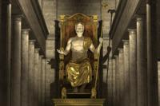
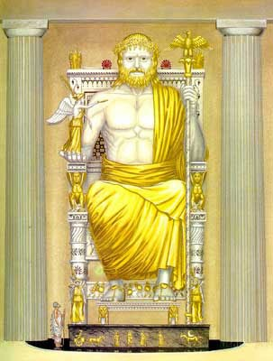
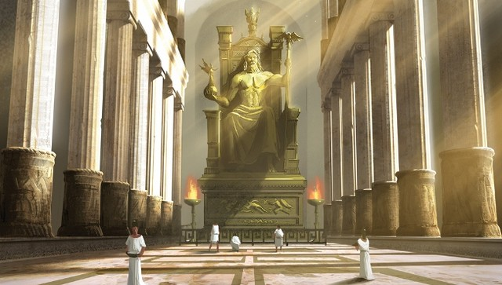
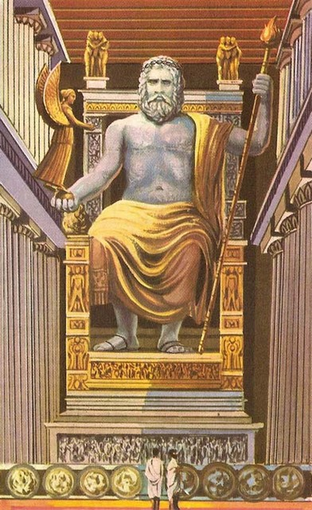
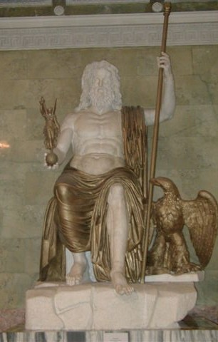

Нещасними вважалися жителі Стародавньої Греції, хто не бачив цю статую Зевса в Олімпії. Головна прикраса храму Зевса Антипатр Сидонський ще в III столітті до нашої ери відніс до списку 7 чудес світу . Сама запам'ятовується робота скульптора Фідія вражала всіх сучасників, які побачили її.
Автором статуї став відомий афінський скульптор Фідій. Для створення головної статуї Греції потрібно було навіть спорудити спеціальне приміщення, що відповідає розмірам храму. У процесі створення статуї допомагали учень Колот і брат Панен. Статуя Зевса постала перед публікою в 435 році до нашої ери. За розповідями Фідій особисто стежив за реакцією прийшли людей, здивованих величчю громовержця. Навіть склалося враження, що сам Зевс особисто спустився до скульптора, щоб попозувати. Так головний релігійний центр Греції обзавівся ще однією визначною пам'яткою.

За все своє існування статую кілька разів реставрували. Статуя Зевса в Греції піддавалася пошкодження блискавкою, землетрусом, були випадки крадіжки її золотих частин. Особливу увагу приділяли їй римляни. Так імператор Калігула в 40 році збирався привезти до Риму статуї і зображення всіх значущих пам'яток завойованої Греції, під цей список потрапляла і статуя Зевса. Але за легендою під час робіт статуя розреготалася, і всі розбіглися в дикому страху, а статуя як і раніше залишалася в Олімпії. В останній раз про неї згадується в 363 році нашої ери. Після прийняття християнства в 391 році всі язичницькі храми піддаються закриття, і храм Зевса руйнується. Є згадки, що статую Зевса десь на початку V століття перевозять в Константинополь, де вона за повідомленням візантійського історика кедра повністю знищується в результаті пожежі 475 року
Статую закривав величезний вовняний завісу, пофарбований фінікійським пурпуром. Завіса всупереч всім усталеним традиції не розсуваються або піднімався, а навпаки опускався вниз на мотузках, відкриваючи погляду відвідувача храму величний образ Зевса.
Статуя Зевса Олімпійського була зроблена з золота і слонової кістки, в так званій хрізоелефантінной техніці. Для прикраси статуї привезли 200 кілограмів чистого золота. За описом сучасників Зевс сидів на троні, голову його прикрашав вінок, в правій руці він тримав богиню перемоги Ніку, в лівій - скіпетр, увінчаний орлом. Плащ Зевса прикрашали зображення тварин і квітів. Ноги Зевса спиралися на лавку. Трон височів на величезному п'єдесталі - 9,5 на 6,5 метрів.

Окрема увага приділялася прикрасі трону дива світу статуї Зевса в Олімпії. Він був виконаний з чорного дерева, золота, слонової кістки і дорогоцінних каменів. Трон був рясно заповнений зображеннями сцен давньогрецької міфології. Кожна ніжка трону містила чотири Ніки, на перекладині між ніжками представлялися сцени війни греків з амазонками і спортивні змагання. Розписом трону займався брат Фідія, художник Паненом. У сценах присутні образи знаменитих Геракла, Тезея, Прометея, Ахілла, Аполлона, Артеміди, Геліоса, Гери, Гермеса, Афродіти, Афіни, Посейдона. Зрозуміло, серед цих картин присутній особисто і сам Зевс.

Але найбільше, звичайно, вражали розміри статуї Зевса в Стародавній Греції. Права долоня знаходилася на висоті колон першого ярусу храму, голова - на рівні другого ярусу. У Страбона навіть склалося враження, що якби Зевс встав зі свого трону, то дах храму була б проломлена. За сучасними думок загальна висота статуї оцінюється від 12 метрів до 17 метрів.
Для збереження слонової кістки жерці змащували статую маслом. Це оберігало її від «болотистого повітря». В афінському Акрополі , навпаки, через сухого повітря статую Афіни змочували водою. Пол статуї покривав чорний мармур з штучним поглибленням, схожим на басейн, куди стікало масло. Ще одне призначення для басейну було пов'язано з ілюзією світла - світло від дверей відбивався від масла і висвітлював голову і плечі статуя, створюючи враження, що це саме бог випромінює світло людям.

Грецька статуя по типу Фідія